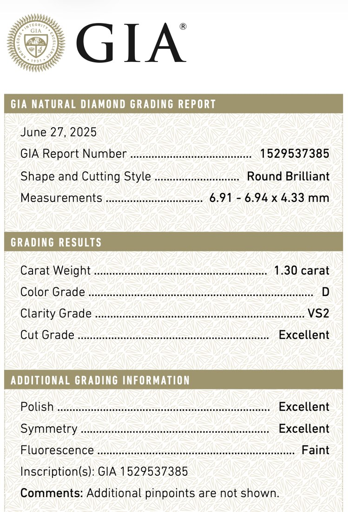

The 4Cs — cut, colour, clarity and carat weight — are usually presented as the universal formula for choosing a diamond. They are important: they provide a recognised system for describing and comparing stones.
But they do not tell the whole story.
Two diamonds with apparently similar grading reports can look remarkably different in person. One may appear bright and balanced, while the other looks dark, hazy or smaller than expected. A certificate records essential characteristics, but it cannot fully communicate how a diamond captures light, how harmonious its shape appears or how it will look in a particular piece of jewellery.
The 4Cs help us classify diamonds. They do not choose the diamond for us.
What are the 4Cs?
The 4Cs were created to provide a consistent language for evaluating diamonds:
- Cut describes how well a diamond has been proportioned, polished and finished.
- Colour measures the absence of colour in a white diamond.
- Clarity evaluates its internal and external characteristics.
- Carat is the diamond’s weight.
These grades provide a useful starting point. The mistake is treating them as a complete guarantee of beauty.

Cut: more than a grade on the certificate
Cut has the greatest influence on the way a diamond interacts with light.
Excellent
Light entering the table reflects off both pavilion facets and returns to the eye. Bright, with even contrast across the whole surface.
Very Good
Almost all the light still returns, though it leaves at a slightly less direct angle. The difference is hard to see without a side-by-side comparison.
Good
Light returns at a shallower angle and less of it reaches the eye. Brilliance is visibly reduced.
Fair
The pavilion is too shallow to reflect the ray back. Light passes straight through the bottom of the stone, which can look flat or watery towards the centre.
Poor
The pavilion is too deep. The ray reflects once, then meets the opposite facet at too steep an angle and escapes through the side. The stone carries weight it never shows face-up.
A beautifully cut diamond reflects light back towards the observer, creating brightness, flashes of colour and contrast. If its proportions are less successful, some light can escape through the diamond instead, leaving areas that appear dark or lifeless.
For standard round brilliant diamonds, laboratories such as GIA provide an overall cut grade. However, an “Excellent” cut grade defines a range — it does not mean that every diamond within that category will have identical proportions or visual performance.
Fancy-shaped diamonds, including ovals, pears, cushions, marquises and emerald cuts, require even more careful evaluation. GIA does not give these shapes an overall cut grade. Their beauty therefore cannot be assessed by looking for the word “Excellent” on the report.
This is changing, but only in part: GIA has announced that from 2027 it will issue cut grades for marquise, oval and pear shapes. Cushions, emerald cuts and the rest will still have none. And even for the three shapes that gain a grade, the caveat above still holds — a grade describes a range of stones, not a single standard of beauty. It will narrow the search. It will not end it.
When I evaluate the certificate and the diamond itself, I look beyond the label and consider the underlying mathematical proportions that influence brightness, balanced contrast, and light reflection:
- Is the diamond bright across its entire surface?
- Does it show balanced contrast, or are there distracting dark areas?
- Does the shape look symmetrical and harmonious?
- Are its proportions attractive?
A grading report can help narrow the selection, but visual assessment remains essential.
Colour: what will the eye actually notice?
The GIA colour scale for white diamonds runs from D to Z, representing the absence of colour, through progressively warmer grades. In natural diamonds, colour originates from trace elements and structural conditions within the crystal lattice. Nitrogen is the most common impurity and typically produces yellow to brown hues depending on its concentration and arrangement.
D–F
Colourless
G–J
Near colourless
K–M
Faint
N–R
Very light
S–Z
Light
Beyond Z
Fancy colour
The D–Z scale stops at Z. A diamond with more colour than that is no longer graded on it at all: it is classified as a fancy colour diamond and assessed on a separate system, by hue, tone and saturation rather than by the absence of colour. The logic inverts at that point. Everywhere on the D–Z scale, colour reduces value; in fancy colours, it becomes the value.
A D-colour diamond is rarer and more expensive than a G- or H-colour diamond. But rarity and visible beauty are not always the same thing.
How noticeable colour appears depends on several factors:
- the diamond’s shape;
- its size;
- the colour of the metal;
- the jewellery design;
- the viewing angle;
- the sensitivity of the individual observer.
Some shapes retain or reveal body colour more readily than others. The pointed ends of pear, marquise and oval diamonds, for example, can sometimes show more warmth. Step cuts, such as emerald and Asscher cuts, also display colour differently from brilliant cuts.
The setting matters too. A slightly warmer diamond can look particularly harmonious in yellow or rose gold, while a white-metal setting may make warmth more apparent.
For many clients, choosing a well-selected G- or H-colour diamond instead of automatically insisting on D–F can preserve a beautifully white appearance while freeing part of the budget for cut, dimensions or carat weight.
The right colour grade is therefore not simply the highest one the budget permits. It is the grade that works for the chosen diamond, setting and person.
Clarity: rarity versus visible beauty
Almost every natural diamond contains small internal characteristics called inclusions or external characteristics called blemishes. Clarity grades describe their size, number, type, position and visibility under magnification.
High-clarity diamonds are rare, but a higher clarity grade does not necessarily make a diamond more beautiful to the unaided eye.
FL · IF
Flawless / internally flawless
VVS1 · VVS2
Very, very slightly included
VS1 · VS2
Very slightly included
SI1 · SI2
Slightly included
I1 · I2 · I3
Included
A VVS diamond may contain inclusions that are extremely difficult to detect under 10× magnification. A carefully selected VS2 — or sometimes an SI1 — may also appear completely clean without magnification. From a normal viewing distance, the two diamonds may look identical, even though their prices differ substantially.
This does not mean clarity is unimportant. The nature and position of an inclusion must be examined carefully.
An inclusion beneath the centre of the table may be more noticeable than one close to the edge. Certain inclusion types or positions can raise durability concerns. Numerous clouds or graining may affect transparency and make a diamond appear hazy, even if the clarity grade initially seems acceptable.
Rather than selecting clarity by grade alone, I look at:
- the type of inclusions present;
- their location within the diamond;
- how they affect transparency and overall appearance;
- whether the diamond is eye-clean;
- whether any inclusion could create a durability concern;
- whether the client is paying for microscopic rarity that will never be visible.
For most jewellery, the objective is not necessarily to find the highest clarity grade. It is to find a structurally sound, transparent and visually clean diamond.
Carat: weight is not the same as size
Carat is a measure of weight, not visible dimensions.
Diamonds and other gemstones are weighed in metric carats. One carat equals 0.2 grams. Carat measures weight and should not be confused with karat, which indicates gold purity, as in 18K gold.
Two diamonds of the same carat weight can nonetheless look noticeably different when viewed from above.
See it at actual size
Compare six shapes at true scale, and calibrate the tool to your own screen so a stone appears at its real millimetre size.
A diamond may carry more of its weight in its depth, making it face up smaller. Another diamond of the same weight may have a wider visible spread. Shape also affects perceived size: elongated ovals, pears and marquises can appear larger than round diamonds of an equivalent weight.
This is why I compare the diamond’s millimetre measurements as well as its carat weight.
The number “1.00 ct” has strong emotional and commercial significance, but it should not distract from the diamond’s actual appearance. A beautifully proportioned 0.90-carat diamond can sometimes look as large as — or more attractive than — a poorly proportioned 1.00-carat stone. This is where cut becomes critical: a poorly cut 1.00-carat diamond can hide much of its weight in its depth, appearing smaller and less lively than its carat weight suggests, meaning the client may ultimately overpay for the symbolic “1.00 ct” threshold on the certificate rather than for visible beauty.
What the 4Cs do not tell you
The 4Cs are essential, but several qualities that strongly influence a diamond’s appearance cannot be reduced to four grades.
Light performance
Light performance describes how effectively a diamond returns and distributes light. A stone may have impressive specifications yet show weak brightness or distracting dark areas. This must be judged visually, ideally under more than one lighting condition.
Transparency
A diamond should look crisp and transparent. Some stones appear milky, cloudy or “sleepy” because of particular combinations of inclusions, graining or fluorescence. This effect may not be obvious from the headline clarity grade alone.
Face-up dimensions
The grading report provides measurements, but buyers often focus only on carat weight. Examining the visible length and width helps determine whether the diamond offers an appropriate visual spread for its weight.
Shape and outline
Fancy shapes require individual judgement. Two ovals with the same ratio may have very different outlines: one may be softly rounded and harmonious, while another appears too narrow, too wide or uneven.
In pear shapes, I examine the symmetry of the shoulders, the form of the point and the overall balance. In emerald cuts, I look at the pattern created by the steps and the distribution of light and dark areas. These qualities are not captured by a single certificate grade.
The bow-tie effect
Elongated brilliant shapes — particularly ovals, pears and marquises — often display some degree of bow-tie effect: a darker bow-shaped area across the centre.
A slight bow tie can create attractive contrast and is not automatically a defect. A strong, persistent bow tie, however, can dominate the stone and reduce its brightness. Measurements alone cannot reliably predict its severity. The diamond must be assessed through images, video and, whenever possible, direct observation.
Fluorescence
Fluorescence is the reaction some diamonds show under ultraviolet light. It is frequently treated as inherently negative, but this is an oversimplification.
In many diamonds, fluorescence has no undesirable visible effect in ordinary conditions. In some cases, it may even make a slightly warmer diamond appear whiter. Only a small proportion of strongly fluorescent diamonds display an oily or hazy appearance. Fluorescence should therefore be evaluated as one characteristic of an individual stone — not rejected automatically.
Where to invest your budget
The “best” diamond is not necessarily the one with the highest grades. It is the one that uses the available budget intelligently.
In many cases, it makes sense to:
- prioritise cut, brightness and overall visual balance;
- choose an eye-clean diamond instead of paying for inclusions that are invisible without magnification;
- consider G–H colour instead of insisting automatically on D–F;
- compare visible dimensions rather than carat weight alone;
- adapt colour and clarity requirements to the diamond shape;
- account for the setting and metal colour;
- avoid paying a premium for a symbolic carat threshold if the visual difference is negligible.
There is no universal combination of grades that suits every person. One client may value rarity and want a colourless, exceptionally high-clarity diamond. Another may prefer the largest lively-looking stone available within a particular budget. Both are valid priorities — but they lead to different selections.
Can you choose a diamond from the certificate alone?
A grading report confirms essential information. It helps establish identity, characteristics and quality, and it should always be reviewed carefully.
But it is not a beauty certificate.
Supplier photographs and rotating videos provide additional information, but they also have limitations. Lighting, exposure, background and camera settings can change how a diamond appears. A highly illuminated video can make almost any stone sparkle, while a dark reflection may be mistaken for a structural problem.
The report, measurements, photographs and videos must therefore be considered together. When possible, the diamond should then be examined in person and under different types of light.
How I select diamonds for my clients
My selection process does not begin and end with searching for a particular combination of grades.
I review the grading report, proportions and measurements, but I also examine the diamond as an individual stone. Depending on its shape, I assess its outline, visible spread, transparency, light distribution, symmetry, inclusion placement and any bow-tie or other distracting visual effect.
I also consider the person who will wear it and the jewellery in which it will be set.
The objective is not simply to find a diamond that performs well on paper. It is to find one that is genuinely beautiful, appropriately priced and suited to the client’s priorities.
The 4Cs are the beginning, not the final decision
Understanding the 4Cs helps you ask better questions and compare diamonds more confidently. But the grades should be interpreted, not simply maximised.
A diamond is a natural object with its own proportions, internal characteristics and visual personality. Its beauty cannot be fully expressed by four letters and numbers on a report.
The most successful selection brings together objective verification, visual examination and the client’s individual priorities.
Looking for a diamond selected for beauty — not merely for its grades? Contact Selected Diamonds for a personalised consultation and carefully curated selection.